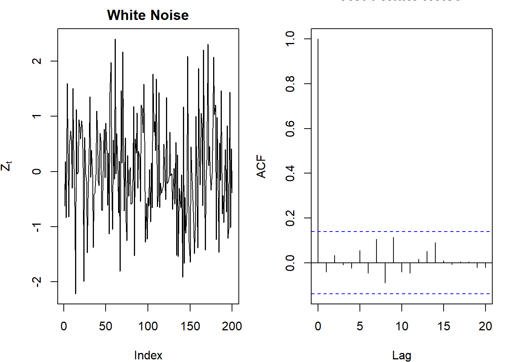
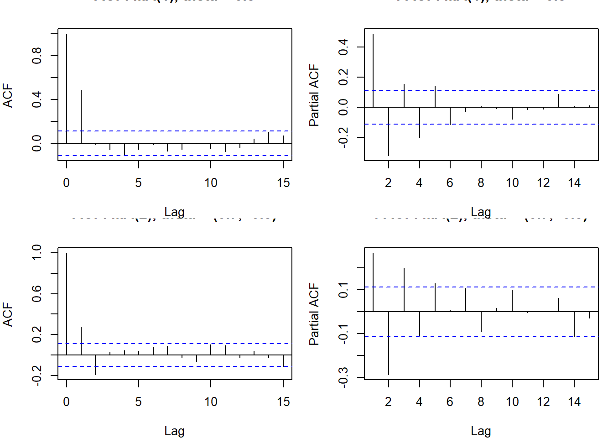
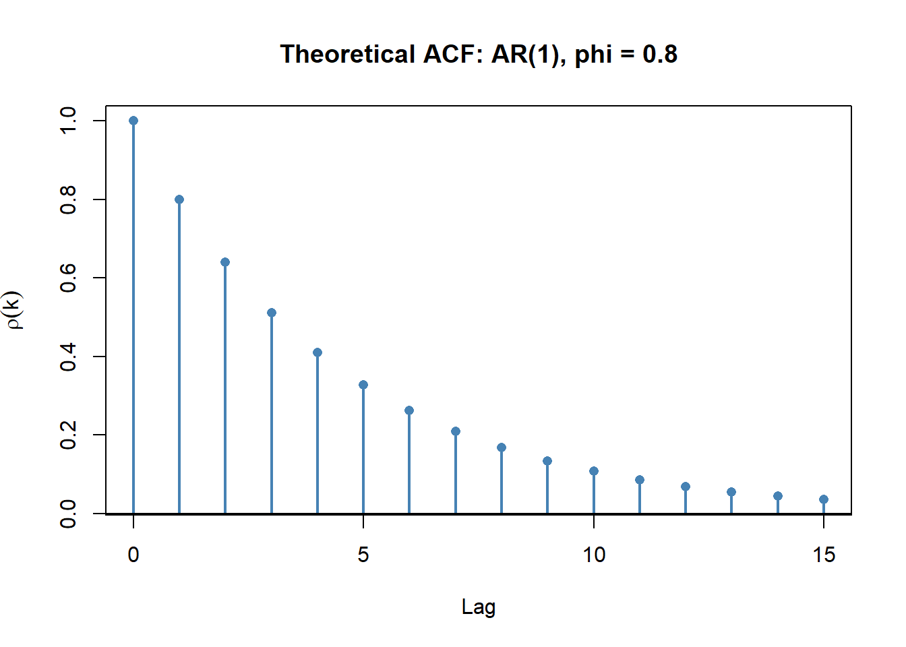
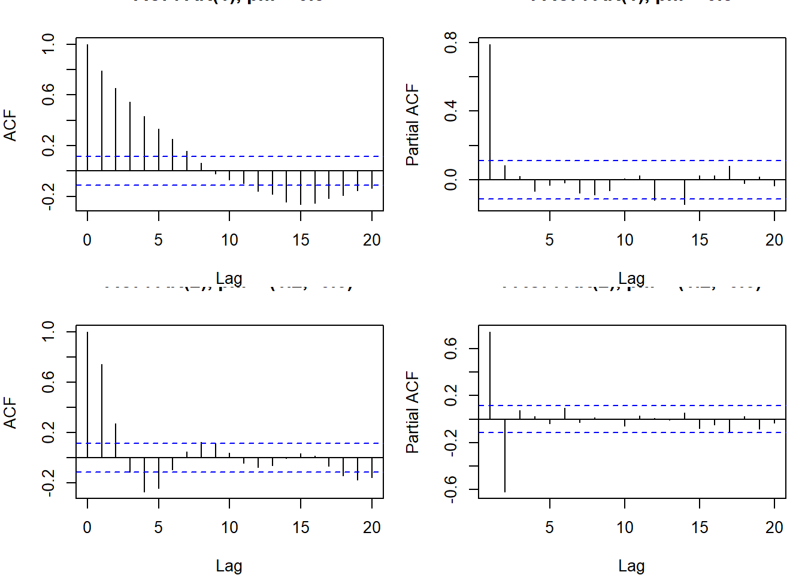
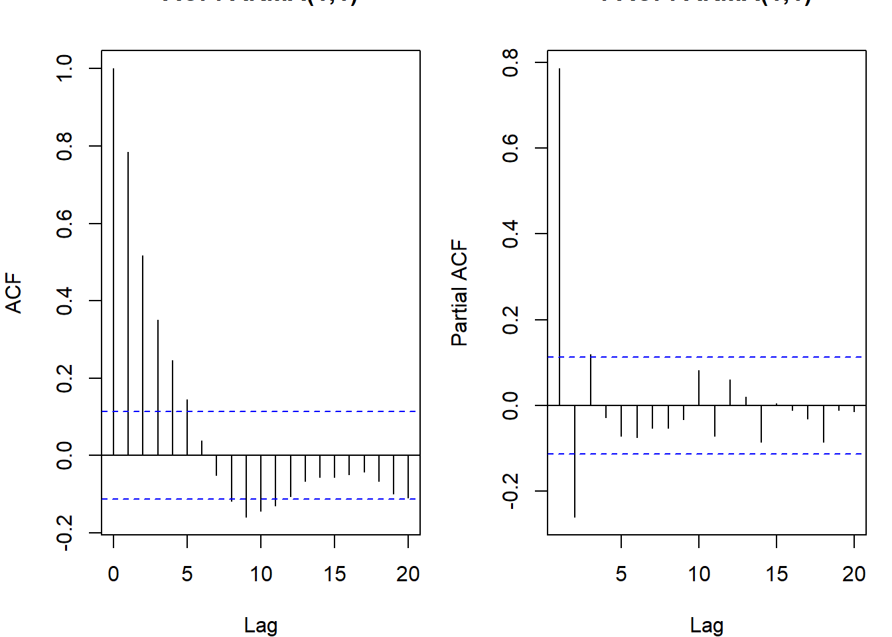
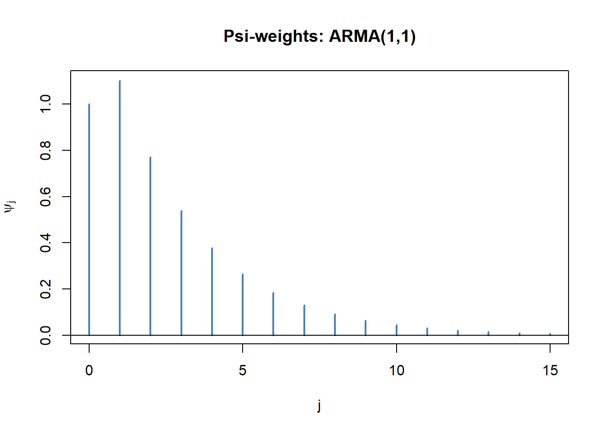

library(forecast) # Arima(), ARMAtoMA(), auto.arima(): ARMA fitting and MA-inf weightsBasic Linear Models
AR(p), MA(q), & ARMA(p,q) Models
White Noise
All linear time series models start from white noise \(\{Z_t\}\):
\[Z_t \sim WN(0, \sigma_Z^2)\]
meaning \(E(Z_t) = 0\), \(Var(Z_t) = \sigma_Z^2 < \infty\), and \(Cov(Z_t, Z_s) = 0\) for \(t \neq s\). White noise has no autocorrelation and no memory. Simulated with base::rnorm() and visualized with stats::acf().
If additionally \(Z_t \overset{iid}{\sim} N(0, \sigma_Z^2)\), we call it Gaussian white noise. The distinction: iid WN \(\Rightarrow\) WN, but not vice versa. WN only requires uncorrelated errors; they can still be dependent (e.g., \(Z_t = \epsilon_t \epsilon_{t-1}\) where \(\epsilon_t \overset{iid}{\sim} N(0,1)\) is WN but not iid).

Linear Processes
A linear process is a process of the form:
\[X_t = \mu + \sum_{j=-\infty}^{\infty} \psi_j Z_{t-j}, \qquad Z_t \sim WN(0, \sigma_Z^2)\]
where \(\sum_{j=-\infty}^{\infty} |\psi_j| < \infty\) (absolute summability, ensures the sum converges). All causal, invertible ARMA processes are linear processes. The psi-weights \(\{\psi_j\}\) characterize how past and future shocks affect \(X_t\).
A causal linear process only involves past shocks: \(X_t = \mu + \sum_{j=0}^{\infty} \psi_j Z_{t-j}\) with \(\psi_0 = 1\). This is the MA(\(\infty\)) representation. Causal processes have \(\psi_j = 0\) for \(j < 0\).
For a causal linear process:
- \(E(X_t) = \mu\)
- \(\gamma(k) = \sigma_Z^2 \sum_{j=0}^{\infty} \psi_j \psi_{j+k}\)
- \(\gamma(0) = \sigma_Z^2 \sum_{j=0}^{\infty} \psi_j^2\)
MA(q): Moving Average
A MA(q) process expresses \(X_t\) as a weighted sum of the current and past \(q\) white noise shocks:
\[X_t = \mu + Z_t + \theta_1 Z_{t-1} + \cdots + \theta_q Z_{t-q} = \mu + \Theta_q(B) Z_t\]
where \(\Theta_q(B) = 1 + \theta_1 B + \cdots + \theta_q B^q\) is the MA polynomial and \(\theta_q \neq 0\).
Properties of MA(q)
A MA(q) is always stationary (it is a finite linear combination of WN, which is stationary). Its moments:
\[E(X_t) = \mu\] \[\gamma(0) = \sigma_Z^2 (1 + \theta_1^2 + \cdots + \theta_q^2)\] \[\gamma(k) = \sigma_Z^2 \sum_{j=0}^{q-k} \theta_j \theta_{j+k}, \qquad k = 1, \ldots, q \qquad (\theta_0 \equiv 1)\] \[\gamma(k) = 0, \qquad k > q\]
So the ACF cuts off after lag \(q\), which is the signature of an MA process. The PACF of an MA(q) tails off (decays slowly).
MA(1) autocorrelation in detail:
\[\rho(1) = \frac{\theta_1}{1 + \theta_1^2}, \qquad \rho(k) = 0 \text{ for } k > 1\]
Note that \(\theta_1\) and \(1/\theta_1\) give the same ACF (since \(\rho(1)\) is symmetric in \(\theta_1\) and \(1/\theta_1\)). This is why invertibility is required: to get a unique MA representation.
Invertibility
An MA(q) is invertible if the roots of \(\Theta_q(z) = 1 + \theta_1 z + \cdots + \theta_q z^q = 0\) all lie outside the unit circle (i.e., \(|z_i| > 1\) for all roots \(z_i\)).
Invertibility allows writing \(Z_t\) as a convergent linear combination of past \(X_t\) values (the AR\((\infty)\) representation):
\[\Pi(B) X_t = Z_t, \qquad \Pi(B) = \Theta_q(B)^{-1}\]
Without invertibility, there are multiple MA processes with the same ACF. The invertible one is the unique, identifiable representation.
MA(1) invertibility: \(\Theta_1(z) = 1 + \theta_1 z = 0 \Rightarrow z = -1/\theta_1\). For \(|z| > 1\): \(|-1/\theta_1| > 1 \Rightarrow |\theta_1| < 1\).
In R, MA processes are simulated with base::arima.sim(model = list(ma = c(theta1, theta2)), n = T) and fit with forecast::Arima(x, order = c(0, 0, q)).

MA(1): ACF has a single spike at lag 1, zero after. MA(2): ACF has spikes at lags 1 and 2, zero after. PACF of an MA(q) tails off.
AR(p): Autoregressive
A AR(p) process regresses \(X_t\) on its own \(p\) past values:
\[X_t = \phi_1 X_{t-1} + \cdots + \phi_p X_{t-p} + Z_t\]
In operator notation: \(\Phi_p(B) X_t = Z_t\) where \(\Phi_p(B) = 1 - \phi_1 B - \cdots - \phi_p B^p\) and \(\phi_p \neq 0\). With a non-zero mean: \((X_t - \mu) = \phi_1(X_{t-1} - \mu) + \cdots + \phi_p(X_{t-p} - \mu) + Z_t\).
Causality (Stationarity)
An AR(p) is causal (equivalently, stationary) if all roots of the characteristic polynomial \(\Phi_p(z) = 1 - \phi_1 z - \cdots - \phi_p z^p = 0\) lie outside the unit circle:
\[\Phi_p(z) = 0 \implies |z| > 1\]
When causal, \(X_t\) has an MA(\(\infty\)) representation:
\[X_t = \Psi(B) Z_t = \sum_{j=0}^{\infty} \psi_j Z_{t-j}, \qquad \psi_0 = 1\]
The \(\psi\)-weights satisfy \(\Psi(B) = \Phi_p(B)^{-1}\) and decay to zero geometrically.
AR(1) example: \(X_t = \phi X_{t-1} + Z_t\). Characteristic equation: \(1 - \phi z = 0 \Rightarrow z = 1/\phi\). For stationarity: \(|1/\phi| > 1 \Rightarrow |\phi| < 1\).
AR(2) example: \(X_t = \phi_1 X_{t-1} + \phi_2 X_{t-2} + Z_t\). Characteristic equation: \(1 - \phi_1 z - \phi_2 z^2 = 0\). The roots \(z_{1,2}\) must satisfy \(|z_{1,2}| > 1\). The stationarity region in \((\phi_1, \phi_2)\) space is the triangle:
\[\phi_2 + \phi_1 < 1, \quad \phi_2 - \phi_1 < 1, \quad |\phi_2| < 1\]
# check if AR(2) with phi = (1.2, -0.5) is stationary
phi <- c(1.2, -0.5)
roots <- polyroot(c(1, -phi)) # roots of 1 - phi1*z - phi2*z^2
cat("Roots:", round(Mod(roots), 4), "\n")Roots: 1.4142 1.4142 cat("Stationary:", all(Mod(roots) > 1), "\n")Stationary: TRUE Use base::polyroot(c(1, -phi)) to get the roots of \(\Phi_p(z)\) and check all(Mod(roots) > 1) for stationarity.
Yule-Walker Equations
Multiply the AR(p) equation by \(X_{t-k}\) and take expectations. Using \(E(Z_t X_{t-k}) = 0\) for \(k \geq 1\) (since \(Z_t\) is uncorrelated with past values):
\[E(X_t X_{t-k}) = \phi_1 E(X_{t-1} X_{t-k}) + \cdots + \phi_p E(X_{t-p} X_{t-k})\]
\[\gamma(k) = \phi_1 \gamma(k-1) + \phi_2 \gamma(k-2) + \cdots + \phi_p \gamma(k-p), \qquad k \geq 1\]
Dividing by \(\gamma(0)\):
\[\rho(k) = \phi_1 \rho(k-1) + \phi_2 \rho(k-2) + \cdots + \phi_p \rho(k-p), \qquad k \geq 1\]
In matrix form for \(k = 1, \ldots, p\):
\[\underbrace{\begin{pmatrix} \rho(0) & \rho(1) & \cdots & \rho(p-1) \\ \rho(1) & \rho(0) & \cdots & \rho(p-2) \\ \vdots & & \ddots & \vdots \\ \rho(p-1) & \rho(p-2) & \cdots & \rho(0) \end{pmatrix}}_{R_p} \begin{pmatrix} \phi_1 \\ \phi_2 \\ \vdots \\ \phi_p \end{pmatrix} = \begin{pmatrix} \rho(1) \\ \rho(2) \\ \vdots \\ \rho(p) \end{pmatrix}\]
This is the Yule-Walker system \(R_p \boldsymbol{\phi} = \boldsymbol{\rho}\). Given \(\boldsymbol{\phi}\), we can solve for \(\boldsymbol{\rho}\); or given sample \(\hat{\boldsymbol{\rho}}\), we can estimate \(\hat{\boldsymbol{\phi}} = \hat{R}_p^{-1} \hat{\boldsymbol{\rho}}\) (Yule-Walker estimation).
Properties of AR(p)
For a causal AR(p) with zero mean:
\[\gamma(0) = \sigma_Z^2 \sum_{j=0}^{\infty} \psi_j^2\]
The Yule-Walker recursion gives the ACF for lags \(k \geq p\): the ACF satisfies the same linear recurrence as the AR polynomial, so it tails off (decays geometrically or as damped sinusoids). The PACF cuts off after lag \(p\), which is the signature of an AR process.
AR(1) ACF and PACF in detail:
For \(X_t = \phi X_{t-1} + Z_t\) with \(|\phi| < 1\):
- \(\gamma(0) = \sigma_Z^2/(1-\phi^2)\)
- \(\rho(k) = \phi^k\) (exponential decay)
- \(\phi_{11} = \rho(1) = \phi\), \(\phi_{kk} = 0\) for \(k > 1\)

AR(2) ACF: the Yule-Walker recursion gives \(\rho(k) = \phi_1 \rho(k-1) + \phi_2 \rho(k-2)\) for \(k \geq 2\), with initial conditions \(\rho(0) = 1\) and \(\rho(1) = \phi_1/(1-\phi_2)\). The solution depends on whether the roots of \(\Phi_2(z)\) are real or complex:
- Real roots: ACF is a mixture of two exponentials
- Complex roots: ACF oscillates as damped sinusoids (pseudo-periodic behavior)

AR(2) with \(\phi_1 = 1.2, \phi_2 = -0.6\): the complex roots produce the sinusoidal oscillation in the ACF.
ARMA(p,q)
An ARMA(p,q) combines autoregressive and moving average components:
\[X_t = \phi_1 X_{t-1} + \cdots + \phi_p X_{t-p} + Z_t + \theta_1 Z_{t-1} + \cdots + \theta_q Z_{t-q}\]
In operator notation: \(\Phi_p(B) X_t = \Theta_q(B) Z_t\).
An ARMA(p,q) is causal/stationary if all roots of \(\Phi_p(z)\) lie outside the unit circle, and invertible if all roots of \(\Theta_q(z)\) lie outside the unit circle. We also require that \(\Phi_p(z)\) and \(\Theta_q(z)\) share no common roots (otherwise the model is over-parameterized).
ACF and PACF of ARMA(p,q)
For an ARMA(p,q), multiplying by \(X_{t-k}\) and taking expectations gives:
\[\gamma(k) = \phi_1 \gamma(k-1) + \cdots + \phi_p \gamma(k-p) + \sigma_Z^2 \sum_{j=k}^{q} \theta_j \psi_{j-k}, \qquad k \geq 0\]
For \(k > q\), the second term drops out and the ACF satisfies the same AR(p) recursion. So the ACF tails off after lag \(q - p\) (the MA part dies out and only the AR part drives long-run autocorrelation).
Both ACF and PACF tail off for ARMA(p,q) with \(p,q > 0\). Neither cuts off cleanly. Use information criteria (AIC/BIC) to select orders.

ARMA(1,1) in Detail
\(X_t = \phi X_{t-1} + Z_t + \theta Z_{t-1}\), with \(|\phi| < 1\) and \(|\theta| < 1\).
The autocovariances: \[\gamma(0) = \sigma_Z^2 \frac{1 + 2\phi\theta + \theta^2}{1 - \phi^2}\] \[\gamma(1) = \sigma_Z^2 \frac{(1 + \phi\theta)(\phi + \theta)}{1 - \phi^2}\] \[\gamma(k) = \phi \gamma(k-1), \qquad k \geq 2\]
So \(\rho(1) = \frac{(1+\phi\theta)(\phi+\theta)}{1 + 2\phi\theta + \theta^2}\), and \(\rho(k) = \phi^{k-1}\rho(1)\) for \(k \geq 1\).
Psi- and Pi-Weights
Psi-weights (MA\((\infty)\) representation)
Any causal ARMA has an MA(\(\infty\)) representation \(X_t = \Psi(B) Z_t = \sum_{j=0}^{\infty} \psi_j Z_{t-j}\).
The \(\psi\)-weights satisfy \(\Psi(B) = \Phi_p(B)^{-1} \Theta_q(B)\), which gives the recursion:
\[\psi_j = \theta_j + \phi_1 \psi_{j-1} + \phi_2 \psi_{j-2} + \cdots + \phi_p \psi_{j-p}, \qquad j \geq 0\]
where \(\theta_j = 0\) for \(j > q\) and \(\psi_j = 0\) for \(j < 0\). The \(\psi\)-weights measure the impulse response: how a shock at time \(t\) propagates forward.
forecast::ARMAtoMA(ar = phi, ma = theta, lag.max = k) returns \(\psi_1, \ldots, \psi_k\) directly.
Pi-weights (AR\((\infty)\) representation)
Any invertible ARMA has an AR(\(\infty\)) representation \(\Pi(B) X_t = Z_t\):
\[X_t = -\sum_{j=1}^{\infty} \pi_j X_{t-j} + Z_t\]
The \(\pi\)-weights satisfy \(\Pi(B) = \Theta_q(B)^{-1} \Phi_p(B)\), with recursion:
\[\pi_j = -\theta_j + \phi_1 \pi_{j-1} + \cdots + \phi_q \pi_{j-q+1}\]
The \(\pi\)-weights are what an estimated finite AR model approximates.

Summary: ACF/PACF Identification
| Model | ACF | PACF |
|---|---|---|
| WN | All zero | All zero |
| MA(q) | Cuts off after lag \(q\) | Tails off |
| AR(p) | Tails off | Cuts off after lag \(p\) |
| ARMA(p,q) | Tails off (after lag \(q-p\)) | Tails off (after lag \(p-q\)) |
Use this as a first guide. In practice, for ARMA with \(p,q > 0\), both tailing off makes identification hard from the ACF/PACF alone; rely on AIC/BIC over a grid of candidate \((p,q)\).
Appendix: Key Functions
arima.sim(): Simulating ARMA Processes
Simulates \(T\) observations from any ARMA(p,q) specification. The model argument is a list with named elements ar (AR coefficients) and ma (MA coefficients).
set.seed(99)
# AR(2) with phi = (0.5, -0.3)
x_ar2 <- arima.sim(model = list(ar = c(0.5, -0.3)), n = 200)
# ARMA(1,1)
x_arma11 <- arima.sim(model = list(ar = 0.7, ma = 0.4), n = 200)
cat("AR(2) mean:", round(mean(x_ar2), 3), " sd:", round(sd(x_ar2), 3), "\n")AR(2) mean: -0.167 sd: 1.187 polyroot(): Characteristic Polynomial Roots
Checks causality (AR roots) and invertibility (MA roots). Input is the coefficient vector of the polynomial in increasing degree order.
# AR(2): phi_1 = 1.2, phi_2 = -0.6
# Polynomial: 1 - 1.2z - (-0.6)z^2 = 1 - 1.2z + 0.6z^2... wait
# polyroot expects coefficients c(a0, a1, a2,...) for a0 + a1*z + a2*z^2
# For AR: Phi(z) = 1 - phi1*z - phi2*z^2, so pass c(1, -phi1, -phi2)
phi <- c(1.2, -0.6)
roots <- polyroot(c(1, -phi))
cat("Modulus of roots:", round(Mod(roots), 4), "\n")Modulus of roots: 1.291 1.291 cat("Causal (all |root| > 1):", all(Mod(roots) > 1), "\n")Causal (all |root| > 1): TRUE ARMAtoMA(): Psi-Weights
Computes the MA(\(\infty\)) representation coefficients \(\psi_1, \ldots, \psi_k\) for any ARMA(p,q). Useful for computing forecast error variance \(\sigma_Z^2 \sum_{j=0}^{h-1} \psi_j^2\).
# ARMA(1,1) with phi = 0.7, theta = 0.4
psi <- ARMAtoMA(ar = 0.7, ma = 0.4, lag.max = 10)
round(c(psi0 = 1, psi), 4) # psi_0 = 1 always psi0
1.0000 1.1000 0.7700 0.5390 0.3773 0.2641 0.1849 0.1294 0.0906 0.0634 0.0444 Arima() vs arima(): Fitting
stats::arima() is base R; forecast::Arima() is a wrapper that handles some edge cases better and returns an object compatible with forecast(). Both accept order = c(p, d, q) and seasonal = list(order = c(P, D, Q), period = s).
set.seed(1)
x <- arima.sim(model = list(ar = 0.6, ma = -0.3), n = 150)
mod <- Arima(x, order = c(1, 0, 1))
cat("phi:", round(coef(mod)["ar1"], 4),
" theta:", round(coef(mod)["ma1"], 4),
" sigma2:", round(mod$sigma2, 4), "\n")phi: 0.6644 theta: -0.3569 sigma2: 0.8213